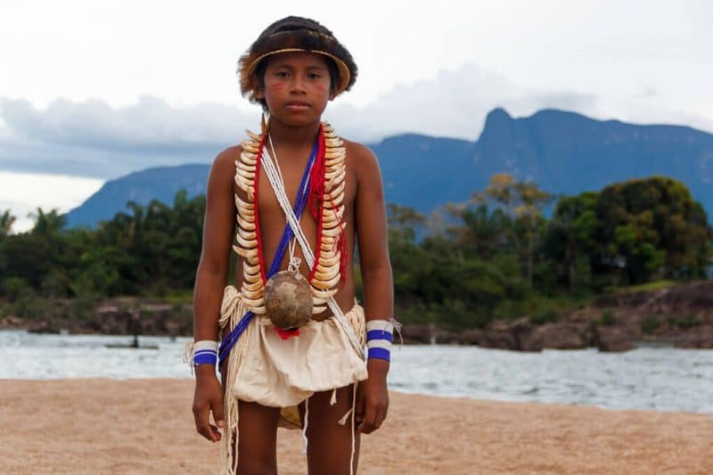
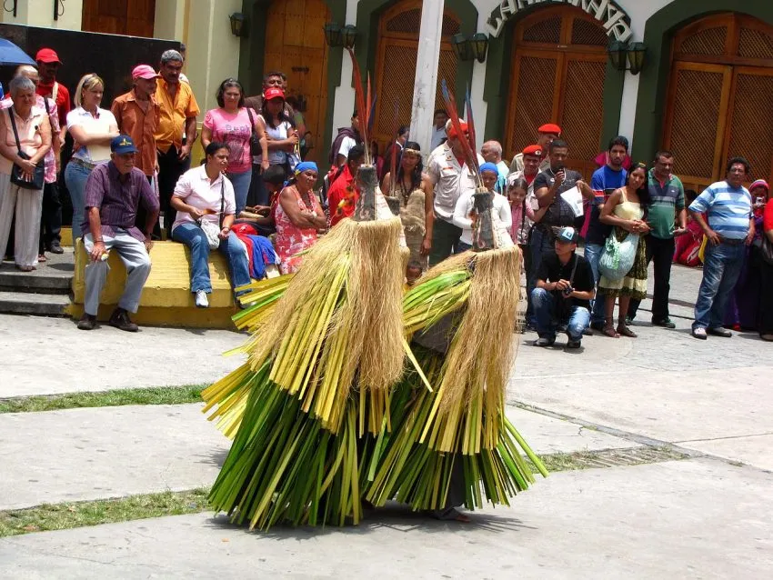

En los años 60 Johannes Wilbert hizo referencia a la utilización de guayucos por parte de los wótjüja. Tanto hombres como mujeres usaban esta prenda fabricada con algodón. Según este testimonio, los de los hombres eran triangulares y los de las mujeres rectangulares. Anteriormente usaban guayucos confeccionados con fibras vegetales e incluso optaban por andar completamente desnudos. En la actualidad usan los guayucos en menor medida, alterándolos con las vestimentas y usanzas criollas.
En relación con las pinturas corporales, Wilbert señala lo siguiente:
“… en algunos grupos, los hombres se pintan el pecho. Las mujeres las mejilla, abdomen y muslos con figuras geométricas de color negro sirviéndose de clichés de madera. La pintura, chica está preparada con las hojas de ciertas plantas a las que se mezcla una resina aromática llamada araña”
Asimismo, las mujeres y los hombres piaroas se pintan el rostro con onoto y pintura vegetal negra mezclada con resina. Para ellos, la pintura corporal va más allá de una simple decoración de la piel, tiene connotaciones simbólicas y saca a relucir mediante los diseños los signos particulares de cada persona. Los motivos de estas pinturas corporales son acuerdo con el sexo y se usan sellos de madera para plasmar los diseños.
Adicionalmente los wótjüja adornan sus cuerpos con collares, brazaletes y coronas de plumas de tucán, aunque estos últimos generalmente son exclusivos para los samanes.
En el mundo religioso de los piaroas los cantos de los shamanes ocupan un lugar primordial. El shamán invoca a dios cuando canta y se empeña en lograr el bienestar de las personas que viven en su comunidad. El mayor repertorio de los cantos se basa en recitales para que las personas sean curadas de las enfermedades que padecen. Asimismo, existen otros cantos wótjüja referidos a pasajes mitológicos, haciendo especial énfasis en la creación. También mencionan a los héroes o personajes mitológicos piaroa, quienes dieron origen a las enfermedades.
El lenguaje utilizado en los cantos es el antiguo, no el común idioma piaroa que hablan algunos miembros de este pueblo, en la actualidad. Este lenguaje antiguo es sumamente metafórico y confuso y lo utilizan las personas cuando envejecen para hacerse mas sabio. El libro los aborígenes de Venezuela describe los cantos de la siguiente manera:
“La mayor parte de los cantos es una lista de ‘nombres’ de dioses, enfermedades, animales. La lista es un recuento de las propiedades de un determinado que pone en manifiesto, mediante unos procedimientos bastantes complicados, la naturaleza transformadora tanto de los seres mitológicos como de los cosmos Wótjüja. La simple identificación de los tributos es más que suficiente para saber a que dioses se está haciendo referencia.”
Para los piaroas la diosa de la fecundidad recibe el nombre de Chejeru. Ella es una diosa Tianawa que suministra las canciones. Existen muchos otros dioses Tianawa que descienden al mundo terrenal transformados en animales. Rureyei deambula como avispa. Tuwa’isa como un puma y Muk’a hace lo propio como águila arpía. Los cantos de los samanes tienen como fin obtener la ayuda de estos dioses benévolos.
En cada comunidad piaroa existe la figura del rųvwą. Este personaje tiene poder no solo político, sino también espiritual. Este personaje se encarga de encaminar la celebración de los ritos a los miembros de la comunidad. El rųvwą tiene el conocimiento necesario para emprender esta labor, es un sabio. Tiene la habilidad de controlar los espíritus y conoce el universo en su magnitud.
